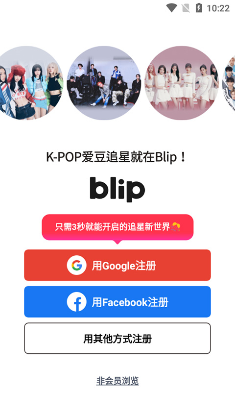
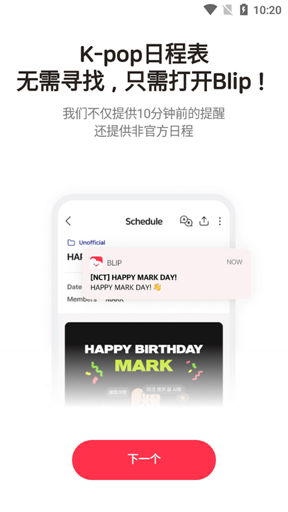

第一次用 blip 追 K-POP？五分钟从零到上手
blip 把本命的官方排期和粉丝自发活动收进同一张日程表，双重提醒不坑关键时刻。跟着这篇从下载到第一次写追星日志，全流程带一遍。
这篇能带你从完全不懂到用起来，不需要任何基础。
blip 到底是干嘛的
想象一下——你同时追着三个 K-POP 团，每天要刷四五个群、两三个官推、一个 Fancafe，生怕错过本命的回归、演唱会或签售会。blip 就是帮你把这些信息收进同一张日程表的 App。blip官网上的介绍说得更清楚——它的作者是韩国 Space Oddity 公司，专门做给 K-POP 粉丝用的。
它解决的核心痛点就一个：不用再守着好几个地方等消息接力。正式排期和粉丝自己发起的活动混排在同一张表里，关键行程前 10 分钟先提醒一次，临开始前 1 分钟再补一次——两次兜底，关键时刻不会掉链子。
对追 K-POP 的朋友来说，这已经是刚需级别的工具了。Google Play 上百万级安装量，App Store 评分 4.6 分，口碑一直很稳。

五分钟上手：从安装到第一次跑通
blip 的 Android 版本大概 118MB，最低支持 Android 9 系统。你可以直接去应用商店搜 blip，或者从官方下载拿到 APK 文件，覆盖安装就行——覆盖安装不会清除已有数据，放心更。
装完打开后，第一步是选你关注的艺人。blip 的数据库里已经有主流的 K-POP 团和 solo 歌手，直接勾选就好。选完之后，首页的日历会自动填充这些艺人近期的排期——电视台节目、专辑回归、演唱会、签售会、甚至粉丝自发的生日咖啡厅应援，全在里面。
然后等第一波提醒推送到你手机上。默认是提前 10 分钟一次、提前 1 分钟再响一次，两个通知一起上，确保你不会因为刷别的东西错过直播开场或开票时间。
就这三步：装 → 选本命 → 等提醒。五分钟走完，接下来就是你日常追本命时自然地用了。
上手后先玩这三个功能
日程表视图
这是你每天打开 blip 最常看的地方。月历上每个有本命活动的日子都会有小标记，点进去能看到当天所有排期的详细信息。你会发现正式节目排期和粉丝自发起的应援活动混排在一起，时间顺序一目了然——这就是 blip 和其他追星 App 最大的不同。

粉丝日志（Fanlog）
这是 blip 独有的功能。当你参加完一场活动或看完一场直播后，回到 blip 打开"创建"入口写日志，编辑器会自动带出当天你关注艺人的所有日程，作为参考条目插在正文里。比如"今天 BLACKPINK 有 M Countdown 演出""TWICE 签售会在下午 3 点"——你不用自己回忆那天本命做了什么，直接就能往下写。
Fanlog 写完可以设为仅自己可见、好友可见或者公开。默认是仅自己可见，相当于你的私人追星手账。月底翻月历，每个有 Fanlog 的日子点一遍，就是整个月的追星回忆录。
应援项目（blip Support）
这是 blip 站内的玩法。日常用 App 做任务可以攒一种叫 Gem 的通用货币，用来参与应援项目。达成目标后，产品方会把应援落地成真的——比如地铁灯箱广告、户外大屏、生日应援等。你在应用里投的每一点 Gem，都是实实在在帮本命达成某个线下应援项目。不花钱，纯靠日常使用就能攒。应援玩法的具体规则和 Gem 的获取方式，可以去blip文档翻，讲得挺细。
小白的三个常见疑问
Fanlog 自动带出来的日程能改吗？
可以。自动带的只是参考文本，你可以删掉、改成自己的话、或者完全忽略不写。blip 不会强制你必须提到当天的日程——它只是帮你省掉回忆时间。
更新版本会丢数据吗？
正常覆盖安装不会丢。Fanlog 是存在账号里、跨设备同步的，更新过程理论上不会影响已发布的内容。保险起见，写了一半的长日志在更新前先确认保存一下——有些版本自动保存，有些需要手动点。
旧版本能用吗？
能用，但会有体验差异。旧艺人数据还能看，但新团和新歌的日程可能不完整，新版本才有的功能（比如新增的应援奖励类型）在旧版本里也看不到。应用商店默认会自动更，尽量保持最新就好。
写在最后
blip 对 K-POP 粉丝来说，就像一个把所有信息源拧成一股的"追星总控台"。它不做社区、不做社交引流，就专注把日程追踪和应援落地做透——这也是它在同类应用里口碑一直很稳的原因。
上手之后，如果你想把自己的追星记录写得更用心，可以试试 Fanlog 名人堂的评选；如果你想深入了解某个功能的细节，翻翻前面提到的文档就好。关于这款应用的资料在三个代码平台都有维护，国内网络不稳定的时候换 Gitee 或 GitCode 就行——GitHub、Gitee、GitCode。祝你的本命每一场演出都能准时赶上。